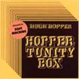

strange music page
canterbury music * * * jazz-rock
#えーとSoft Machine抜けてからのH.HopperとかE.Deanとか
この辺の活動はなんだか非常に交錯していて、私みたいな素人には何年ごろにどのバンドが活動していてとか、かなりわかりずらくなってます。
そんな訳でもっと色々捜してる方はCOLLAPSOへ(他力本願)
|
- Hugh Hopper
- Hugh Hopper & Alan Gowen
- SOFT HEAD
- Hopper/Dean/Tippett/Gallivan
- Keith Tippet & Andy Sheppard
|
#新宿disk unionにて\1000。相変わらず自分のところの売れ残りは安いです、国内廃盤は妙に高いくせに。中味は関係無いですね、ほんと。
えーと1972に出された、Soft MachineのH.Hopperのソロアルバムです。時期的に言うとSoft Machineの"6"の頃で、要するにH.Hopperの脱退直前と言うことになります。この"6"にはH.Hopper作曲の"1983"というアルバム全体から見ると移植の曲が入っていて、明かにこのアルバムと繋がる曲と思います。
当時のSoft Machineの方向性とは明かに違う、難解な感じのアルバムかもしれないです。曲によっても振幅は大きく、"Minitrue"なんてちょっと聴きHenry Cowにもきこえます。
(1999.7.10)
- Miniluv
- Minipax I
- Minipax II
- Minitrue
- Miniplenty
- Minitrue reprise
- Miniluv reprise
- Miniluv [version I]
- Miniluv [version II]
- Minitrue
- Minipax II [slow theme]
- Minipax I
- Minipax II [fast theme]
- Hugh Hopper (bass,mellophone,piano,percusssions,loops,vocals)
- Lol Coxhill (soprano sax)
- Gary Windo (tenor sax)
- Malcolm Griffiths (trombone)
- Nick Evans (trombone)
- Pye Hastings (guitars)
- John Marshall (drums,percussions)
Arcangelo: ARC-2104 (original released 1972)
Cuneiform Records: RUNE-104
#なんかね、National HealthとSoft Machineを足したよーな所の有るこのアルバム。ほんとはもっと地味なの想像してたので予想外。
Hugh Hopperのベースもファズを効かせてブイブイ言ってます。Dave Stewartは何だかやけに攻撃的な音色。短いけど「Miniluv」のライヴバージョンがかっちょいいな。(2003.12.2)

- Hopper Tunity Box
- Miniluv
- Gnat Prong
- The Lonely Sea And The Sky
- Crumble
- Lonely Woman
- Mobile Mobile
- Spanish Knee
- Oyster Perpetual
- Hugh Hopper (bass,recorders,soprano sax,percussions)
- Elton Dean (alto sax,saxello)
- Mark Charig (cornet,tenor horn)
- Frank Roberts (electric piano)
- Dave Stewart (organ,pianet,oscillators)
- Mike Travis (drums)
- Richard Brunton (guitars)
- Gary Windo (bass clarinet,saxes)
- Nigel Morris (drums)
BELLE ANTIQUE: HER-013 (original release 1977)
CULTURE PRESS: 3012842
#disk union新宿6Fにて、新品なのになんと\500。マーキーの国内盤の中古とか、国内廃盤とかけっこーイイ値段付けるくせに、やることが極端ですねユニオンは、Soft Headも\500だったし。アリガタイからいいですけど。
えと、H.Hopper(soft machine)とA.Gowen(Gilgamesh,National Health)のデュオです。さすがにこの値段なんで結構しょぼいかと思いきや、結構良かったです。Alan GowenのソロアルバムをH.Hopperがサポートしたみたいな感じで、あんまり派手な音ではないんですけど、カンタベリーらしいシミジミとしたCDです。
ちなみに8-12.はボーナストラックで、N.Morris(per.)を加えた1980のライヴ。(1999.5.28)
- Seen Through A Door
- Morning Order
- Fishtank I
- Two Rainbows Daily
- Elibom
- Every Silver Lining
- Waltz For Nobby
- Chunka's Troll
- Little Dream
- Soon To Fly
- Bracknell Ballad
- Stopes Change
- Alan Gowen (keyboards)
- Hugh Hopper (bass)
- Nigel Morris (percussions on 8-12.)
Arcangelo: ARC-1015 (original release 1980)
#えーと10/4に新宿Disk Unionで\500です。特価品コーナーに有ったんですけど、新品です。いくらなんでも安すぎだと思います。1978年5月フランスでのライヴで、もっとフリーな感じの作品かと思ってたのですが、A.Gowenの参加のせいか構築と即興のバランスがよく、ジャズ好きな人にもプログレ好きな人にも勧められるアルバムになってます。カンタベリー好きな人は必聴だと思います。良いお買い物でした、ちなみに4.5.はLP未収録のボーナストラックです。
- Seven For Lee
- Seven Drones
- Remain So
- Ranova
- C You Again
- C.R.R.C.
- One Three Nine
- Hugh Hopper (bass)
- Elton Dean (alto sax,saxello)
- Alan Gowen (electric piano,synthesizers)
- Dave Sheen (drums)
Arcangelo: ARC-1028
Ogun Records: OGCD-013-B
#これは....カンタベリと言うよりもキースティペットの音に近いくてフリージャズしてるんですけど。まぁH.Hopper+E.Deanと言う事で。
実はほんとはコレじゃなくてGOWEN/MILLER/SINCLAIR/TOMKINSってのを買おうと思ってたんですけど....何か勘違いしちゃいまして。
でも怪我の功名、緊張感有って良いCDでした。
- Seven Drones
- Jannakata
- Echoes
- Square Enough Fire
- Rocky Recluse
- Bjorn Free
- Soul Fate
- Hugh Hopper (bass)
- Elton Dean (alto sax,saxello)
- Keith Tippett (piano)
- Joe Gallivan (drums,percussions,synthesizers)
ONE WAY RECORDS: OW-31373 (original release 1976)